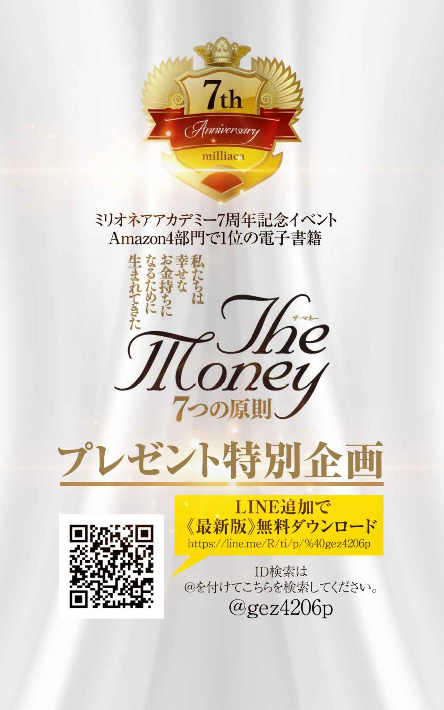
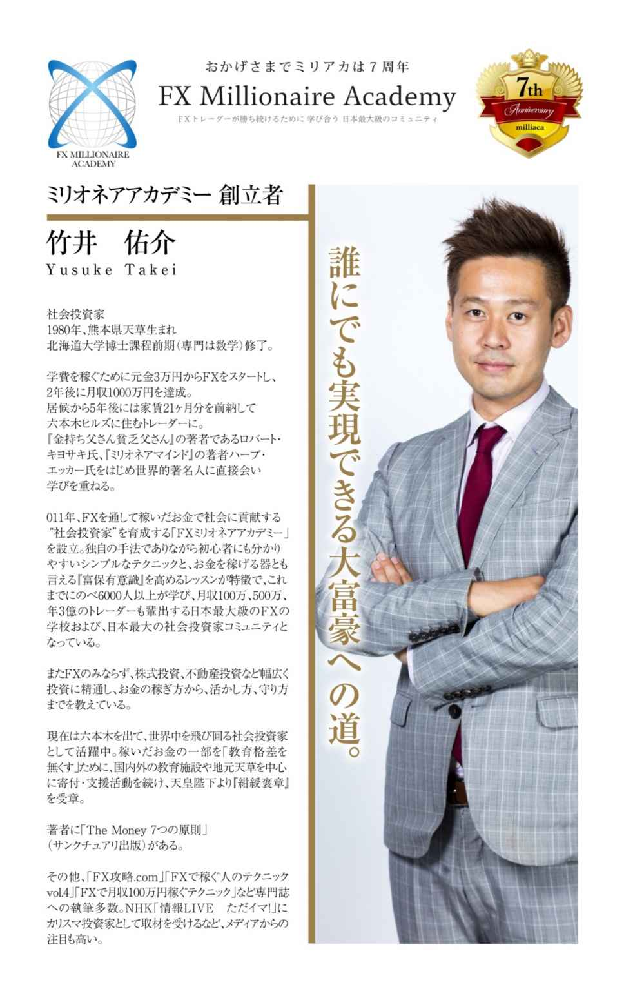

| ザ・マネー 7つの原則 第2章 富保有意識 お金持ちと心持ち | |
| 竹井 佑介 | |
| NEXT LEVEL (2018) | |
第２原則富保有意識 ― お金持ちと心持 ち ―
２― ５ 全てを学びととらえる お金は唯一目に見えるスピリチュアル
あなたはお金持ちという言葉を聞いてどのようなイメージが浮かびますか？
おいしいものを毎日食べてぶくぶく太っている姿・札束をばら撒いて夜のお店でシャンパンを開けまくっている姿・刺激を求め続けた結果クスリにハマっている姿・ヒルズ族・昼夜問わず働きまくって常に動き回って時間に追われている姿・会社を上場させ大きな資金調達に成功し事業拡大している姿・たくさんの不動産を多数所有し家賃収入でのんびりと暮らしている姿・子供達や周りの人々から尊敬され世界中から話を聞きに来られている姿・世界各地で講演に呼ばれ人生訓について話している姿・大豪邸で孫たちに囲まれ何不自由無い穏やかな暮らしをしている姿。
これらはそのまま成功のイメージとも重なるかもしれません。お金持ちになると思考の「自由」を手に入れ、考え方の幅が広がります。もちろんお金が無くても出来ることもたくさんあります。成功のイメージとして心の平静を挙げられるような方でしたら、インドのガンジス河のほとりで座禅を組んで瞑想をしている姿・多摩川のほとりを散歩しつつ草花に心奪われ、日々穏やかに過ごしている姿・京都のお寺で座禅し、季節の移り変わりを綺麗に整えられた庭の中に見て感動している姿が浮かんだ方もおられるでしょう。
このように一度立ち止まってイメージを書き出してみることで自分の成功の目指すべき方向性が見えて来るのではないでしょうか？
「心は人生のコンパスです」
お金持ちであることと同時に心持ちであることも大切なことです。
いくらお金があっても心が病んでいれば、そのお金を使って薬物に走り、自分自身を傷つけてしまいます。お金のパワーを心でコントロールすることです。お金持ちであることと、心持ちであることは表裏一体であり、どちらも同じように大切です。
だからこそ、この章の本題には富保有意識という言葉を用いてあります。富を保有しコントロールするための心、つまり意識が非常に肝要です。そのため、この章ではこの富保有意識について考察を深めて行くことにしましょう。
富保有意識を上げていくためには具体的にどのようにしたら良いのでしょうか。日本のことわざに「類は友を作る」というのがありますが、私はいつもこれにもうひとつ付け加えてこのように話しています。
「類は友を作り、友は類を作る」
つまり、どのような人（類）に自分がなりたいかをまず設定して、既にそうなっている人たちの輪の中に入ることで自分もそのような類になっていくということです。だからこそ自分の理想とする意識の高いチームに属することが、富保有意識を上げるために最も大事なことになります。そうすることで自分が目指している世界にある常識と自分のこれまでの人生で築き上げてきた常識との違いを肌で感じ認識することが出来ます。
そして、目指すべき人たちが持っている常識に対して「あれ？」、「意味が分からない」と感じたことこそ、その人たちと自分との意識の間にあるギャップであり、そのギャップを埋めることであなたの富保有意識は目指すべき方向性にセットされることになります。
そうすることで、自分のこれまでの意識の常識の殻を破り、理想の人たちに近づくことが出来るようになります。
ではそもそも自分の富保有意識はどのようにして測ることが出来るのでしょうか？
それには次の４つの方法があります。
① これまでいくら稼いだことがあるか
② 過去何かを諦めた時のストレスレベル
③ よく連絡取り合う方５人の平均
④ これまでに人生を激変させた決断と行動
ひとつずつ観ていきましょう。
① これまでいくら稼いだことがあるか
お金は数値化出来るため自分自身の富保有意識を測るのに良い指標となります。過去１億円稼いだことがあるのであれば、稼ぐ力は１億円分あるということです。当然ですが、年収１億円取りたいと思っているのであれば、年収１億円超えている方々のグループに入ることが近道です。
② 過去何かを諦めた時のストレスレベル
夢、目標、志を達成しようとする時、人は必ず試練にぶつかります。
成功するために必要な考え方、メンタル、スキルを身に付けるために神様が与える試練を有り難く頂くことです。
そして、乗り越えることが出来た試練のレベルがその人の富保有意識であり、また逆に諦めたということはその試練の時に感じていたストレスには耐えられなかったことを示しています。その意味で諦めた時のストレスレベルが現在の富保有意識のレベルともなります。
また、諦めさえせずに目標達成のためにアプローチを変え、チームを構築し多馬力で挑戦し続ける限りは無限の富を構築する可能性があります。
まさにこの意味で参考になるのが山中鹿之助になります。戦国時代から安土桃山時代にかけての山陰地方の武将で尼子氏の家臣の山中鹿之助は、優れた武勇の持ち主で「山陰の麒麟児」の異名を取っていました。尼子十勇士の筆頭にして、毛利氏の侵略から尼子家を再興するために「願わくば、我に七難八苦を与えたまえ」と三日月に祈った逸話は有名です。
敢えて毛利氏の侵略の七難八苦を受け取り、そしてその困難を乗り越える決意をしています。しかし当然のことながらこの七難八苦を乗り越えなければ一族が毛利氏に滅ぼされることになりますので必死の決意の表明です。
これくらいの肚 を据えて、諦めるという選択肢を無くして全てを乗り越える決意をして事に当たることが出来れば、まさに最強の富保有意識となります。
③ よく連絡取り合う方５人の平均
こちらはまさに「類は友を呼び、友は類を作る」から来ています。富保有意識を上げるために、これまで連絡をよく取っていた人たちと絶交するというわけではなく、あくまでよく連絡を取り合う方を意識的に変えていくということです。
あなたが夢や事業計画などを語った時、なぜそれが無理なのかを論理的に説明してくれるドリームキラーが周りに多いのか、どうしたらそれが叶うのかやり方を教えてくれたり仲間を紹介してくれたり、何より計画の穴を指摘し改善点まで示唆してくれる方が多いのかでは大きく夢を叶えるスピードは変わり結果、富の構築スピードも全く違うものになります。
④ これまでに人生を激変させた決断と行動
人生は選択によって決まり、また選択しなかったことによっても決まっていきます。決断力と判断力は筋肉のようなもので使えば使うほど鍛えられるという話を前の章でもお伝えしました。その意味でたくさんの決断とそれによる行動の変化の経験を積んできた方は、どんどん決断の精度は上がり、行動に移すまでのスピードも加速していくため富保有意識はどんどん高められることになります。
これはビジネスの決断、投資やトレードなどの決断だけでなく、人生のパートナーを見つける時などありとあらゆる場面で力を発揮するものになります。以上が代表的な例となります。
保有意識のレベルには次の７段階があります。
レベル １ 生活の安定
レベル ２ 自己顕示（アピール）
レベル ３ 自己成長
レベル ４ 家族、親族の生活の面倒をみる
レベル ５ 社会貢献
レベル ６ 地元への貢献
レベル ７ 次世代への貢献
レベル１ 生活の安定
自分自身の生活が安定しているということです。お給料などで家賃、生活費、税金などを収め、神様から頂いた生命を保ち暮らすことが出来るという状態です。
レベル２ 自己顕示（アピール）
自分の生活が安定してくると今度は人に認めてもらいたいという意識が芽生えてきます。「自分はこんなに凄いんだぞ！」などと自己顕示欲丸出しのギラギラ系になってしまうのもこのレベルの典型です。
高級な服やアクセサリー、車などを購入し、飾り立てることによって結果的に大事な資金を失ってしまい、本当に費やすべき資産の購入にはほとんどお金が行きません。またこのギラギラ系には更なる問題があります。
それは、この派手な生活を見て寄ってくる人たちはロクな仲間にはならないということです。そこからおこぼれを与（あずか）ろうとしたり、油断を見つけては詐欺によってお金を奪おうとしたりと、あなたのエネルギーを奪ってしまいます。また、こういう仲間こそお金を失うと同時に一瞬でいなくなる薄情な人たちです。ただし、自己顕示の行動も悪いことばかりではありません。素晴らしい行動をし、アピールすることは周りを感化させ良い行動の輪が広がることにもなりえます。そして協力者は増え、あなたの全ての行動を応援し多馬力のレバレッジとなります。
つまりこのレベルにおいては、きちんとした行動を顕示、アピールすることで周りの承認や応援を得られるようになることが大事であり、決してあなたの足を引っ張るような方からの承認は必要ないということです。
レベ ル ３ 自己 成 長
周りにどう見られるかあまり気にならなくなるレベルです。それよりも生き方、考え方、稼ぎ方すべてにおいてより良い自分になろうと自己成長を求めるようになります。周りに自分がどう見られているかではなく、自分が自身の生き方に誇りを持てるかどうかが大事になってくるようになります。見せかけよりも本質を求めるようになります。
レベル４ 家族、親族の生活の面倒をみる
人によっては当たり前のことかもしれませんが、全くのその通りです。
しかしながら日本は、高度経済成長を経て生活レベルが向上したため貧困を経験していない方も多く、そのため親や家族から受けた愛情、生活の保障を当然と考え有難がなく当然と思っている方が多くなってしまったことも事実です。
家族、親族にどれだけお世話になってきたかは自分が親になると分かります。また親孝行をしようと思っても、親が亡くなってしまえば、親孝行したくても出来なくなります。本当に大切なものは実は身近にあって、あなたが当たり前だと思っているものの中にあるのです。それは、家族、親族からのサポートではないでしょうか。
逆に、そこに気付けないような方は何事に対しても感謝の心が無く、本当の絆というものに気付けないのではないでしょうか。そのため腹を割って組む相手がおらず、その分ビジネスで夢を叶えることが難しくなります。ビジネスパートナーとは時間を共に過ごすことが多くなり、また利害関係もあるため本当に深い家族のような仲になります。だからこそ家族との付き合い方をみて私もビジネスパートナーとなって頂くかどうかを決めています。
家族との関係をみることで、自分が将来そのビジネスパートナーからどういう付き合い方をされるのかがよく分かります。自分が豊かになるよりもまずは家族、親族を豊かにするような人であれば信頼できるのではないでしょうか。自分のことしか向いていなかった目が一番身近な恩返しする対象に気付き、サポート出来ていることはとても大事なことです。
レベル５ 社会貢献
自分が満たされ、１番身近な家族、親族が満たされたら次は社会に対して恩返しをする、つまり社会貢献のレベルに入ります。人は金銭的、精神的な余裕が生まれると自分が幸せであることを認識します。そして幸せになれたのは自分以外のすべてのお陰様であることに気付くようになります。ほとんどの人たちは自分が上手くいかないのを誰かのせいにしてしまうものですが、逆にうまくいく人たちは自分以外の全てのおかげで自分が成功した、幸せになれたと考えています。その為、この幸せのお裾分けをしたいと自然と考えるようになり、自分の余剰分、例えば金銭であったり、身体を使った奉仕であったりと積極的に取り組むようになります。
お金の稼ぎ方によってその人の知恵が分かりますが、お金の使い方によってその人の人格も出ます。お金の使い方が社会貢献に向かった時、あなたには新たに稼ぐ理由が見つかり、より一所懸命仕事をされるといった好循環が生まれてきます。私が稼ぐ理由は教育格差を無くすためです。そのために様々な教育施設に寄付をしたり、人を紹介したりしています。
レベル６ 地元への貢献
こちらはレベル４と少し似ているところがあるかと思いますが、灯台下暗しの言葉がある通り、社会貢献をしていく中で私はふと気づくことがありました。自分のアイデンティティは育った環境から得られたものが多いということです。
つまり地元です。地元によって自分が育てられたということに気付けば、地元のために出来ることを一所懸命やろうという心づもりが出てきます。
このように大切なものは本当に足元、身の回りにあるのですが意識しないと気付かないことが多く、自分自身の努力だけで結果が出たなどという驕りも生じてきます。
社会貢献をしていく中で今一度自分が育った環境、地元にも目を向け、出来る範囲で貢献し恩返ししていくということはとても大切なことです。
レベル７ 次世代への貢献
最後に大事なのは次世代まで目を向けていくことです。要はあなたが亡くなりこの世を去ったとしても、あなたの哲学や考え方が広がり、感化された人々がまたあなたの行動を引き継いでいくようにするということです。
そのため、自分が生きている時代のことだけではなく未来のことにも目と意識を向け、何が大切なのか本質を見極め、それらを元に貢献してくことがとても大切なのです。
そして最も大切な事は人に伝え、後継者を構築していくことです。その意味で「人材」ではなく「人財」をしっかりと形成していくことが本当に大切なのです。一生はとても短いですが、伝わっていけば何百年、何千年と後世まで思想は語り継がれ、また人々の幸せに貢献することになります。
あなたは今世で最大限努力をし、歴史や先人の知恵を通して自らを高め、自分の至った境地をシェアし後世につないでいかなければなりません。その意味でこのように本を出すということもとても大切な意義ではないかと考えています。
聖書は世界で一番読まれている本です。その中にテモテの第一の手紙６：７〜１０に次のお金に関する一節があります。「私たちは何一つこの世に持って来なかったし、また何一つ持って出ることもできません。衣食があれば、それで満足すべきです。金持ちになりたがる人たちは、誘惑と罠と、また人を滅びと破滅に投げ入れる、愚かで、有害な多くの欲に陥ります。金銭の欲が、あらゆる悪の根だからです。ある人たちは、金を追い求めたために、信仰から迷い出て、非常な苦痛に突き刺された者もいます。」
ここに書いてあることで大事なことは金銭への欲が、あらゆる悪の根つまり根源であるということです。お金自体を目的にするのではなく、そのお金を何に使いたいのか、何に使うべきなのかが本来の目的になるはずです。そこがずれると全く自分自身が描いていた方向とは異なる所に向かってしまうものです。
聖書の中には裏切りで有名なイスカリオテのユダがいます。イスカリオテとはヘブライ語で「カリオテの人」を意味し、使徒ユダ（ダダイ）とは区別するために使われており、カリオテとはユダヤ地方の村の名を示します。彼はイエス・キリストの弟子のひとりで、会計係です。ヨハネの福音書１２：６に、「彼は、盗人であって、金入れを預かっていたがその中に収められたものを、いつも盗んでいたからである。」と記録されています。お金を管理する者は責任が伴い、盗みたくなる誘惑と隣り合わせであることが示されています。
結局、彼はお金の欲にとりつかれてしまい、当時の奴隷ひとりの値段であった銀貨３０枚で、救い主であるイエス・キリストを裏切り、敵である祭司長の手に渡してしまいました。結局ユダは自らの行いを悔いて、祭司長たちから受け取った銀貨を神殿に投げ込み、首を吊って自殺しました。同様に使徒行伝１：１８によるとユダは裏切りで得た金で買った土地に真っ逆様に落ちて、からだが真二つに裂け、はらわたが全部飛び出してしまったとも書かれています。
いずれにしましてもお金に対する欲にとりつかれたことによって、「金を追い求めたために、信仰から迷い出て、非常な苦痛に突き刺されました。」と書かれているとおりの人物になってしまったというわけです。
ただし、お金は数値化出来るため、目標設定する際に具体的な目標として立てやすいという一面もあります。そこで大事なのはその目標としている数値の根拠、何に使うのか、ここをしっかりとおさえていくことが大切なことではないかと思います。大切な事は、お金に対する欲や愛で目が曇って方向性を見誤らないように気を付けていくことです。
「富保有意識」の意識の部分は言い方を変えれば「器」と言うことも出来ます。この器の意識を大きく保つことが富を構築し維持していくうえでとても大切なことです。何か新しいことに挑戦していく時、必ずと言って良いほど試練が与えられます。
私は２８歳の時にとても信頼しお世話になっている方から詐欺に合いました。それはお金を失う以上に精神的なショックが大きいものでした。ただこの方も実際には私を騙そうとしたわけではなく、本当に良かれと思って持ってこられた投資商品でした。私はこの当時もトレーダーをしておりましたので通常、投資する対象のことは徹底的に調べます。しかしながらこの時は信頼している方が持ってきてくれたものだからということで、調べることなく全力で投資をしてしまいました。
結果たったの数か月で配当は終わり、それをあてにしていた私は家賃が払えなくなるほど困窮する結果になりました。その時は一瞬何も考えられず茫然と過ごしてしまいましたが、冷静になればなるほど落ち込んでいる暇は無いことに気付きはじめ、すぐに対策を考え行動に移していきました。この経験によって得た教訓は２つあります。
１つ目は「お金は自分の子供のように大事に扱う」ということです。どんなに信頼してくれている方から留学先としてエクアドルが良いと言われても、大事な子供を送る以上、徹底的に自分自身でその国の風習、歴史、政治状況、日本との関係性に至るまで徹底的に調べるのではないでしょうか。このように大切にお金を扱うことが大事だということです。
２つ目が特に大事な教訓ですが、「どんな問題も解決方法は同じ」ということです。小学生の時に抱えていた悩みは大人になった私たちにとって取るに足らないものです。私も小学生の時、テレビゲームのファミコンを親に取り上げられ、親に向かって「ファミコンを取り上げられるのは俺にとって一生片足で立っておくほど辛いことだ！」と言って泣きながら片足で立っていたことがあります。今思えば本当に取るに足りない悩みなのですが当時の私にとっては本当に辛いことでした。
これが、私が当時の私よりも器が大きくなっているひとつの証拠です。以前は問題だと感じ動じていたことが、今では動じなくなっているということです。
あの時、詐欺に合いずっと落ち込んでいたら次に進むスピードは著しく落ちてしまい、問題はより大きくなっていたことでしょう。
つまり問題の解決方法は、その問題が問題だと感じなくなるほど自分の器を大きくしていくことです。だからこそ過去に辛い経験をしている人たちは「あれに比べればマシ」となり、少々の問題では動じずに対処することが出来ます。
すると問題が起こってくれたおかげで、自分自身の進むべき道が見えてくることになり、その問題自体に感謝出来るようになります。問題の意味を理解しないまま突き進むと神様はより分かりやすい形で教えてくれます。つまりより深刻な問題が起きることになります。だからこそ、毎回の問題に冷静に対処し、自分ひとりで難しければ周りの仲間たちのサポートも借りながらやるべきことを淡々とこなすことです。その意味で器は自分自身のものだけでなく周りの器も借りることが出来るということを知っておくことです。
どんな問題も実際にそれが問題だと気付いた時点でほとんど問題ではありません。そして問題を放っておかず、越えられた時、あなたの富保有意識は拡大していることでしょう。そして次に同じような問題が起きたとしてもあなたは動じることなく、対処できるようになります。だからこそ全ての問題の解決方法は同じです。その問題を問題だと感じなければ、あなたの富保有意識の器は拡大していくのです。
これまでお話してきました通り、起きている出来事は全て今、あなた自身にとって必要なメッセージです。先に述べたとおり私は以前詐欺に合いましたが、そのおかげで今は顧問弁護士もつけ、どんなに有名で信頼している方からお話を頂いたとしても自分自身や周りのチームを通して徹底的に調べてから、ＧＯサインを出すようになりました。やるといった以上、全ての責任は自分にあるからです。特にお金に関しては扱いをより厳重にするようになりました。
そして、お金は数値化出来るため、これまでよりも良くなったのか、悪くなったのかをはっきりと判断することが出来ます。お金によって大抵の夢を叶えることが出来ます。しかし、お金とは曖昧なものではないでしょうか。
なぜなら１万円札に皆が価値を置いているからこそ、それは１万円の価値を持っているのであって製造コストだけみると１枚２０円程度です。以前は金本位制と言ってお金は金（ゴールド）によってその価値が担保されていました。
しかし現代社会においてこの金本位制はとっくに崩れ、最早貨幣、紙幣の価値の担保はなく皆の信頼によって成り立っています。このようにとても曖昧なものでありながら一様に価値を認めている、ある種スピリチュアルのような特性があります。
お金は唯一目に見えるスピリチュアルと言っても過言ではないでしょう。基本的に出来事、事象によって私たちは様々なメッセージを受け取り、行動や考え方を改善し精進し突き進んでいきます。出来事、事象は時に気づきづらいものも多く、先ほどの詐欺のように相手のせいにして腹が立ってメッセージの本質を受け取れないこともあります。
これらと比べてお金は数値化も出来、はっきりと増減も見ることが出来ますので、一番分かりやすいメッセージと言えるのではないでしょうか。
ただ勘違いしないで頂きたいのは、お金があるから偉いなどといった次元の低いことではなく、お金が無いことによって、これまでの行動やビジネスの方向性が間違っていたことに気付けたり、また自分ひとりの力でやるのではなく人の力を借りることの必要性を知るためのメッセージであったりする側面があるということです。
そして、お金があっても「驕る」ことなく、むしろお世話になった方に感謝をこめて「奢る」（ご馳走させて頂く）ことの方が大切なのは言うまでもありません。
常に自分にとって必要なメッセージを受け止めることが大切です。
聖書の中でとても有名な話に隣人愛があります。自分を愛するように隣人も愛しなさいという意味です。
ヤコブ２：８
もし、本当にあなたがたが、聖書に従って、「あなたの隣人をあなた自身のように愛せよ。」
という最高の律法を守るなら、あなたがたの行いは立派です、とあります。
同じようなものは論語の中にもあります。
孔子アカデミーの創立から孔子没後の服喪にいたるまで財政を担当していた高弟の子貢が「一言で一生涯守って行動を律すべき言葉はありますか」と尋ねたところ、孔子は「それは恕 だ。自分のしてほしくはないことは、人に対してもしないことだ」と返事をしています。「恕」とは思いやりのことです。つまり、自分自身のことを精一杯愛することが前提にあるということです。
そして自分を愛するように人のことも愛することが大事だと伝えられています。
昨今では自分のことすら愛せないという方もいるようですが、それはあなたの親、お友達、あなたに関わってくれた全ての人々に対して失礼なことです。今、自分が存在すること自体に感謝し、ひと呼吸するごとに魂をとどめてくれている器である自分の身体に感謝していくことです。
生きるとは周りの仲間、親、ご先祖様、示唆を与えてくれた先人や歴史上の人物、そしてあなたの目に入るもの全て、目に見えなくても感じられるもの全てに対しての恩を感じ感謝し、その恩に報いていくことです。
だからこそ意義と意志を持って生きることが出来るようになり、そしてそんな自分を愛せるようになり、それと同じように人も愛していけるということです。
同様に自国を愛するように他国を愛すること。愛情のエネルギーは全てを包み込むエネルギーです。そして大元は自分自身や自国にあるということで、この基本をしっかりと理解することが平和につながるのではないでしょうか。
（余談）
国旗掲揚や国歌斉唱を拒否したりするような日本人もいます。私たちは敗戦国であるために一度自国に対する誇りを失っています。終戦記念日というから忘れがちですが、日本は大東亜戦争によって敗戦国です。太平洋戦争という言葉の方が今ではよく使われていますが、当時は太平洋戦争という言葉はありませんでした。日本以外全てのアジアの国が植民地のような状態で、実際植民地ではないとされるタイもアメリカからの麻薬の輸入を断る権利はなく、中国もアヘン戦争に表れている通り、アヘン輸入を断ったらイギリスから戦争を仕掛けられ香港を奪われてしまいました。ちなみにそのアヘン貿易の資金を管理するために創られたのが世界的に有名なＨＳＢＣです。
そんな中アジア解放のために一致団結して白人を追い出してそれぞれ独立しようという目標、建前の戦争だったため名前は大東亜戦争でした。太平洋戦争ということはアメリカに仕掛けた戦争のことをイメージさせますが、本来の攻撃対象にアメリカはもちろんなくＡＢＣＤ包囲網によって石油の供給が絶たれ、国を植民地から解放する代わりに資源を求めるためにアジアに進出した側面もありました。
実際３５０年オランダの植民地であったインドネシアは２週間で日本軍によって解放され、独立軍の組成を日本人がやったことから独立記念日を日本の暦である皇紀で書かれています。
そしてアメリカからの最後通牒であるハルノートの内容があまりにも当時の日本政府にとって荒唐無稽なものだったため止むを得ずアメリカも攻撃対象となりました。ここには日清、日露戦争に勝利し第一次世界大戦で戦勝国となった日本の驕りがあったことも間違いないと思われます。そして敗戦国はその国に誇りが持てるような歴史を消されることになります。
特に国歌すら歌いづらいような状況というのは異常という他ありません。それは戦争を主導した天皇礼賛だから許せないというものです。
国歌の歌詞をみてみましょう。
君が代は千代に八千代にさざれ石の巌となりて苔のむすまで
あなたの代が永遠に続きますようにという内容です。この「君」がもし天皇だけを指すのであればそれは「御君」となるのではないでしょうか？
私はこの歌の真意は「皆の代が永遠に繁栄しますように」ではないかと考えています。また、国際連盟において初めて人種差別撤廃を訴えたのは日本人です。賛成多数を得たものの、それは欧米の国々によって揉み消されてしまいましたが、こういったことをひとつずつ知っていくことによって自国に誇りが持てるようになります。自国に対する愛国心、誇りを理解した時初めて、他国も愛することかができるようになるのではないのでしょうか。

